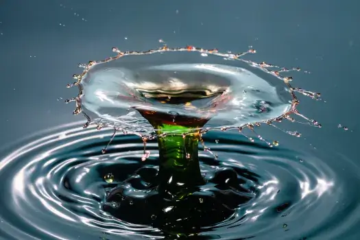

Udržitelné hospodaření s vodou
Navrhujeme systémy pro efektivní sběr, čištění a využití dešťové vody. Snížíte spotřebu pitné vody až o 50 % a přispějete k udržitelnému hospodaření s přírodními zdroji.

Aplikace systému
Průměrná rodina ušetří využíváním dešťové vody až 50 m³ pitné vody ročně.
Kontaktovat nás